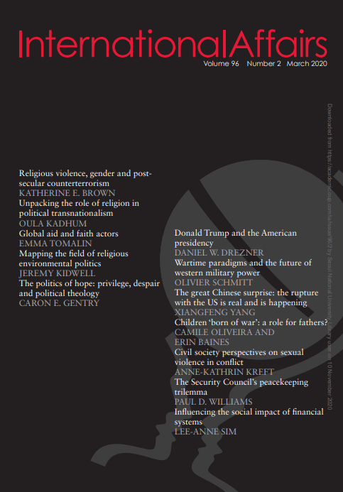

收录于合集 #新刊速递 123个


期刊简介

《国际事务》是国际关系领域的一流学术期刊，也是多学科综合性学术期刊。本刊于1992年由伦敦皇家国际事务研究所查塔姆学院(Chatham House)创立，内容来源广泛，力图囊括业内专家、学术新秀对重点、热点问题的最新思考。2019年期刊影响因子为3.705，在95个国际关系类刊物中位列第4名。
本期编委
【编译】 吕紫烟 徐一凡 邵良 戴赟 刘颖哲 李思 石雨宸
【审校】 卫艺璇 王国欣 姚寰宇
【排版】 苏语涵

本期目录（选编）
1.不成熟的领导：唐纳德·特朗普与美国总统
Immature leadership: Donald Trump and the American presidency
2.战时范式和西方军事力量的未来
Wartime Paradigms and the Future of Western Military Power
3. 中国人大吃一惊：与美国的分道扬镳是真实的，而且正在发生
The great Chinese surprise: the rupture with the United States is real and is happening
4. “战争出生”的孩子:父亲的角色
Children ‘born of war’: a role for fathers?
5. 公民社会对冲突中性暴力的看法：哥伦比亚的父权制与战争战略
Civil Society Perspectives on Sexual Violence in Conflict: Patriarchy and
War Strategy in Colombia
6. 联合国安理会的维和“三难困境”
The Security Council’s peacekeeping trilemma
7. 介入金融系统的社会影响：替代策略
Influencing the social impact of financial systems: alternative strategies
01
不成熟的领导：唐纳德·特朗普与美国总统
【题目】 Immature leadership: Donald Trump and the American presidency
【作者】 Daniel W Drezner，塔夫斯大学弗莱彻法律与外交学院国际政治学教授，布鲁金斯学会非常驻高级研究员。
【摘要】 关于领导人个人背景如何影响外交政策结果的研究再度兴起。唐纳德•特朗普(Donald Trump)担任总统期间凸显了该研究路径的局限性。特朗普的心理十分独特，像一个小孩，以至于仅仅研究他的背景并不足以解释他的决策。这种对特朗普领导能力的描述并非出自他的政治对手之口，而是来自他的盟友、幕僚和下属。与其前任相比，特朗普缺乏控制冲动的能力、注意力不集中且经常发脾气，这些都削弱了他的总统效力。尽管如此，这位第45任总统还是在一场盛行的争论中证明了，总统作为一个国家机构，在美国政治中所拥有的相对实力。特别是，总统权力已经变得如此强大，以至于即使是相对软弱、缺乏经验的领导人也可以执行重大的政策转变。立法、司法和行政部门对总统权力的正式制约都被削弱了。同样，在特朗普上任之前，对总统职位的非正式审查也有所减弱。本文以特朗普的总统生涯以及他作为决策者所存在的严重局限性为例，来证明即使一个软弱的领导人也可以通过担任强有力的职位来影响变革。
There has been a renaissance in the study of how the backgrounds of individual leaders affect foreign policy outcomes. Donald Trump’s presidency highlights the limits of this approach. Trump’s psychology is so unique, and so akin to that of a small child, that studying his background alone is insufficient to explain his decision-making. The evidence for this characterization of Trump’s leadership comes not from his political opponents, but his allies, staffers and subordinates. Trump’s lack of impulse control, short attention span and frequent temper tantrums have all undercut his effectiveness as president as compared to his predecessors. Nonetheless, the 45th president helps to clarify ongoing debates in American politics about the relative strength of the presidency as an institution. In particular, the powers of the presidency have become so enhanced that even comparatively weak and inexperienced leaders can execute dramatic policy shifts. The formal checks on presidential power, from the legislative, judicial and executive branches have all eroded. Similarly, the informal checks on the presidency had also degraded before Trump’s inauguration. This article uses Trump’s presidency—and his severe limitations as a decision-maker—to highlight the ways in which even a weak leader can affect change by holding a powerful office.
【编译】 吕紫烟
【校对】 姚寰宇
02
战时范式和西方军事力量的未来
【题目】 Wartime Paradigms and the Future of Western Military Power
【作者】 Olivier Schmitt，南丹麦大学（University of Southern Denmark）政治与行政学系教授，同校战争研究中心主任。他的研究领域包括：安全与战略研究，世界政治中观念与规范的作用。
【摘要】 从政治层面上对威胁之迫切性的感知到战术层面上对战场主动的伺机而发，时间性与作战和战争都直接相关。尽管有部分学者和军事专家分别从战略层面和战术层面论述过时机的重要性，但有关对时间对战争准备期和战争进行期的讨论却惊人的少。本文投石问路，引出“战时范式”的概念，希望能够帮助理解对时间之感知与战争之进行间的关系。本文认为，“战时范式”将对尽可能快速结束战争的追求和把战争看作一种危机管理的理解结合起来，从军力结构到作战行动对冷战后的西方国家战争起指导作用。本文展现了战争性质的变化如何直接挑战这一战时范式，以及为什么如果西方军队要想在未来的冲突中取胜，建立一种指导技术进步和作战理念的新战时范式是至关重要的。
From the perception of the imminence of threats at the political level to the seizing of initiative through proper timing at the tactical level, temporality is directly related to war and warfare. Yet, despite some analyses of the importance of time at the political/grand strategic level (usually by scholars) and at the tactical level (usually by military professionals) there is surprisingly little discussion of the impact of time on the preparation and the conduct of warfare. This article introduces the concept of ‘wartime paradigm’ as a heuristic device to understand the relationship between the perception of time and the conduct of warfare, and argues that after the Cold War, a specific ‘wartime paradigm’ combining an optimization for speed and an understanding of war as risk management has guided western warfare, from force structure to the conduct of actual operations. It shows how the changing character of warfare directly challenges this wartime paradigm and why, if western forces want to prevail in future conflicts, the establishment of a new wartime paradigm guiding technological improvements and operational concepts is critical.
【编译】 徐一凡
【校对】 卫艺璇
03
中国人大吃一惊：与美国的分道扬镳是真实的，而且正在发生
【题目】 The great Chinese surprise: the rupture with the United States is real and is happening
【作者】 杨向峰（韩国延世大学东亚国际学院助理教授）
【摘要】 有充分的证据表明，中国对特朗普政府的惩罚行为始料未及。贸易战是一个主要的例子，但远不是唯一的例子。这篇文章，除了探讨了中国领导人和分析人士早些时候乐观对待特朗普总统领导下的美中关系的背景，还探讨了为什么他们对事态的转变感到惊讶。本文认为有三个主要因素导致了误判。首先，中国官员和分析人士严重误读了唐纳德·特朗普这个人。由于过分强调他的实用主义，而淡化了他的不可预测性，他们最终对他推出的政策准备不足。第二，一些根深蒂固的中国信仰，例如钟摆摆动和“吵架夫妇”的类比以及“压舱石”的叙述，诱使官员和学者对两国关系稳定产生了过度的乐观情绪。第三，分析和方法上的问题以及政治上的考虑，使他们无法充分把握美国对华战略转变。
Ample evidence exists that China was caught off guard by the Trump administration’s onslaught of punishing acts—the trade war being a prime, but far from the only, example. This article, in addition to contextualizing their earlier optimism about the relations with the United States under President Trump, examines why Chinese leaders and analysts were surprised by the turn of events. It argues that three main factors contributed to the lapse of judgment. First, Chinese officials and analysts grossly misunderstood Donald Trump the individual. By overemphasizing his pragmatism while downplaying his unpredictability, they ended up underprepared for the policies he unleashed. Second, some ingrained Chinese beliefs, manifested in the analogies of the pendulum swing and the ‘bickering couple’, as well as the narrative of the ‘ballast’, lulled officials and scholars into undue optimism about the stability of the broader relationship. Third, analytical and methodological problems as well as political considerations prevented them from fully grasping the strategic shift against China in the US.
【编译】 邵良
【校对】 王国欣
04
“战争出生”的孩子:父亲的角色
【题目】 The Domestic Impact of International Standards
【作者】 Rebecca L. Perlman，普林斯顿大学政治与国际事务助理教授，主要研究领域为国际政治经济学，重点研究监管政策、国际制度和对外直接投资。
【摘要】 本文的研究是关于在冲突或战争中因性暴力而出生的儿童，以及其父亲对其承担的部分或全部责任。在相关的国际政策框架中，“战争中出生”的儿童日益被视为一个特殊的受害者群体。他们的社会身份正好处于作为受害者的母亲和作为犯罪者的父亲之间。考虑到他们出生的环境，他们经常经历着社会排斥和身份认同感的丧失，这对他们的幸福有着长期的影响。以前的研究主要记录了母亲作为照顾者和战时性暴力受害者所面临的挑战。关于父亲对“战争中出生的孩子”的讨论没有出现，这不仅归因于他们的犯罪者地位，而且也归因于他们的身份不明或父子关系并不和睦的假设。这篇文章证明了情况并非总是如此。本文基于一项于2016年至2019年在乌干达进行的研究，该研究包含了与“上帝抵抗”这一前反叛组织战斗人员的访谈和焦点小组讨论。我们探讨了一些父亲是如何设法维持与因“逼婚”而出生的孩子所存在的关系，并对他们的健康和照顾承担部分或全部责任。
In this article, we examine exceptional circumstances in which men who father children born as the result of conflict-related sexual violence assume full or partial responsibility for their child’s well-being. Children ‘born of war’ are increasingly recognized as a particular victim group in relevant international policy frameworks. Their social status falls somewhere between the victimization of their mother and perpetration of their father. Given the circumstances of their birth, they often experience social rejection and loss of identity with a long-term impact on their well-being. Previous scholarship has primarily documented the challenges faced by their mothers as caregivers and as victims of wartime sexual violence. A discussion on fathers to children ‘born of war’ is absent, attributable not only to their perpetrator status, but also to the assumption that their identity is unknown or that a relationship between father and child is undesired. The article demonstrates this is not always the case. Based on research in northern Uganda between 2016 and 2019 which included interviews and focus group discussions with former male combatants in the rebel group the Lord’s Resistance Army, we explore how some fathers seek to maintain a relationship with children born as the result of ‘forced marriage’ and assume partial or full responsibility for their well- being and care.
【编译】 戴赟
【校对】 卫艺璇
05
公民社会对冲突中性暴力的看法：哥伦比亚的父权制与战争战略
【题目】 Civil Society Perspectives on Sexual Violence in Conflict: Patriarchy and War Strategy in Colombia
【作者】 Anne-Kathrin Kreft，奥斯陆大学政治学系博士后。研究兴趣包括武装冲突及其国际对策、政治暴力、性别、与冲突有关的性暴力、公民社会、妇女权利，主要研究的国别是哥伦比亚。
【摘要】 在国际政策领域，与冲突有关的性暴力（conflict-related sexual violence, CRSV）通常被视为“战争武器”（weapon of war），研究人员批评这种框架过于简单。女权主义的学者特别警告说，“战争武器”框架将冲突中的性暴力从性别不平等的结构性因素中剥离出来，而这些因素是性暴力行为的基础。鉴于这些紧张局势，关乎政治的地方行为者如何看待与冲突有关的性暴力的性质和起源？公民社会组织（civil society organizations）经常在当地积极应对与冲突有关的性暴力。因此，更好地了解他们对这种暴力的看法如何与全球主导的“战争武器”叙述相吻合或冲突，具有重要的政策意义。对哥伦比亚妇女组织和受害者协会代表的访谈显示，这些民间社会活动积极分子主要将与冲突有关的性暴力视为父权结构的结果。被动员的妇女将性暴力视为一种非常性别化的暴力，这种暴力存在于和平状态、日常生活和战争的整体过程中，而武器的存在加剧了这一连续性。战略性性暴力也最终被认为以父权制为基础。研究结果揭示了全球主导的对“战争武器”的理解与地方性CRSV方法之间的脱节，前者与社会性别不平等的结构性因素无关，而后者与其有明确的联系。
In international policy circles, conflict-related sexual violence (CRSV) is commonly viewed as a weapon of war, a framing that researchers have criticized as overly simplistic. Feminist scholars in particular caution that the “weapon of war” framing decontextualizes sexual violence in conflict from the structural factors of gender inequality that underpin its perpetration. In light of these tensions, how do politically relevant local actors perceive the nature and the origins of conflict-related sexual violence? Civil society organizations often actively confront conflict-related sexual violence on the ground. A better understanding of how their perceptions of this violence align or clash with the globally dominant “weapon of war” narratives therefore has important policy implications. Interviews with representatives of Colombian women’s organizations and victims’ associations reveal that these civil society activists predominantly view conflict-related sexual violence as the result of patriarchal structures. The mobilized women perceive sexual violence as a very gendered violence that exists on a continuum extending through peace, the everyday and war, and which the presence of arms exacerbates. Strategic sexual violence, too, is understood to ultimately have its basis in patriarchal structures. The findings expose a disconnect between the globally dominant “weapon of war” understanding that is decontextualized from structural factors and a local approach to CRSV that establishes clear linkages to societal gender inequality.
【编译】 刘颖哲
【校对】 姚寰宇
06
联合国安理会的维和“三难困境”
【题目】 The Security Council’s peacekeeping trilemma
【作者】 Paul D Williams：乔治华盛顿大学艾略特国际事务学院教授
【摘要】 联合国安全理事会（简称：安理会）陷入了维和的“三难困境”。安理会现在处于一个维和行动的三个战略目标无法同时实现的情况——执行广泛的任务、维和人员伤亡的最小化和成本效益最大化。这一“三难困境”来自于安理会如何设计联合国维和行动的长期的相互竞争的压力以及维和的三个主要利益相关群体之间的政治分歧——批准维和行动的国家、提供大部分人员和外勤能力的国家，以及支付大部分费用的国家。幸运的是，这一“三难困境”的最消极的后果可以被缓解甚至完全克服。缓解这种消极后果将要求安理会倡导和实施四大改革：改善维和人员表现、追究维和人员不当行为的责任、明确维和行动的重点和次序、以及加强联合国维和行动的财政基础。想要克服“三难困境”需要对关键利益相关群体进行更根本的重组，以便为一个重设的维和事业创造更好的合力 。然而，在当前国际政治背景下，这一点不太可能实现。
The United Nations (UN) Security Council is stuck in a peacekeeping trilemma. This is a situation where the Council’s three strategic goals for peacekeeping operations—implementing broad mandates, minimizing peacekeeper casualties and maximizing cost-effectiveness—cannot be achieved simultaneously. This trilemma stems from longstanding competing pressures on how the Council designs UN peacekeeping operations as well as political divisions between peacekeeping’s three key groups of stakeholders: the states that authorize peacekeeping mandates, those that provide most of the personnel and field capabilities, and those that pay the majority of the bill. Fortunately, the most negative consequences of the trilemma can be mitigated and perhaps even transcended altogether. Mitigation would require the Council to champion and implement four main reforms: improving peacekeeper performance, holding peacekeepers accountable for misdeeds, adopting prioritized and sequenced mandates, and strengthening the financial basis for UN peacekeeping. Transcending the trilemma would require a more fundamental reconfiguration of the key stakeholder groups in order to create much greater unity of effort behind a re-envisaged peacekeeping enterprise. This is highly unlikely in the current international political context.
【编译】 李思
【校对】 王国欣
07
介入金融系统的社会影响：替代策略
【题目】 Influencing the social impact of financial systems: alternative strategies
【作者】 Lee-Anne Sim，澳大利亚国立大学法学院博士研究生
【摘要】 全球金融危机的社会影响使全球和国内金融体系成为公众关注的焦点。尽管在过去十年中，各国政府推出了一系列监管改革，但公众对金融部门的信任度仍然很低，学者们也不断表达自己对金融体系的担忧以及对更大影响的希望。对于那些以社会价值为框架评估金融体系质量的人而言更是如此。对于那些寻求对金融体系的社会价值产生更大影响的人来说，本文提供了一个替代策略的新视角，即应让金融部门和监管机构结成同盟以影响变革。这一同盟策略的主要优势在于解决了发挥影响力的关键制约因素，正如现有学术研究中所发现的，这些制约因素与金融体系固有的特征相关联，因而难以解决。通过解决这些制约因素，联盟战略可以增加金融体系的结果与其偏好的社会价值观更加一致的可能性。
The social impact of the global financial crisis brought global and domestic financial systems into public focus. While over the last ten years governments have introduced a range of regulatory reforms, there are still low levels of public trust in financial sectors, and academics continue to express their concerns about financial systems and their desire for more influence. This is particularly the case for those framing their evaluation of the quality of financial systems in terms of social values. This article offers those seeking more influence over the social values of financial systems, a fresh perspective on their available strategic options for influencing outcomes. It argues that they should consider strategies aimed at making allies of financial sectors and regulators in influencing change. The main advantage of these alliance strategies is that they address key constraints to influence, as identified in existing scholarship, which are difficult to relax because they are tied to features inherent in financial systems. By addressing these constraints, alliance strategies could increase the likelihood that financial system outcomes align more closely with their preferred social values.
【编译】 石雨宸
【校对】 姚寰宇
文章观点不代表本平台观点，本平台评译分享的文章均出于专业学习之用, 不以任何盈利为目的，内容主要呈现对原文的介绍，原文内容请通过各高校购买的数据库自行下载。
添加 “国小政”微信
获取最新资讯


国政学人
支持学术公益与知识传播
微信扫一扫赞赏作者 __赞赏
已喜欢，对作者说句悄悄话
取消 __
发送给作者
发送
最多40字，当前共字
上一页 1/3 下一页
长按二维码向我转账
支持学术公益与知识传播
受苹果公司新规定影响，微信 iOS 版的赞赏功能被关闭，可通过二维码转账支持公众号。